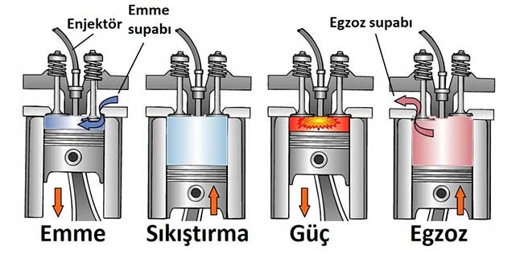
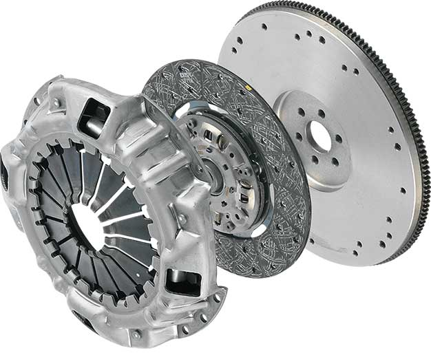
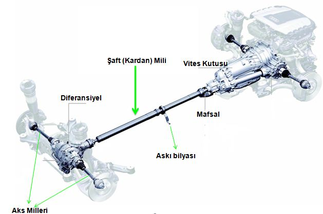

Motor nasıl çalışır? Arabanın kontak anahtarını çevirdiğiniz andan arabanın hareket etmesine kadar olan süreçte arka planda nelerin döndüğünü hiç merak ettiniz mi? Bütün sürücülerin bilmesi gereken bu konuyu fazla teknik konulara girmeden anlatmaya çalışacağım.
Arabanın çalışması kısaca aşağıdaki aşamalardan oluşur.
Şimdi bu aşamaların nasıl gerçekleştiğini ayrıntılı olarak anlatalım.
Arabanın motorunu çalıştırabilmek için öncelikle anahtarı kontağa takmanız gerekir. Anahtarı soktuğunuz yere kontak göbeği denir.
Her kontak göbeğinde direksiyon kilidi bulunur ve anahtarı kontak göbeğine takıp çevirdiğiniz anda direksiyon kilidi pasif hale gelir.
Kontağı çevirdikten sonra eğer aracınız dizel ise gösterge panelinde kızdırma bujileri ikaz ışığı yanar. Kızdırma bujileri devreye girer ve yanma odasını ısıtmaya başlar. Yanma odası 700-900 °C‘lik bir ısıya geldiğinde ikaz ışığı söner. Yanma odası neden ısıtılmaya ihtiyaç duyar ayrıntılı bilgi için bakınız: kızdırma bujisi nedir?
Yanma odasının ısıtılması ile motorunuz çalışmaya hazır hale gelmiştir. Şimdi yapmanız gereken kontağı bir tık daha çevirmek yani marşa basmaktır. Marşa bastığınız anda aküden marş motoruna elektrik akımı gitmeye başlar. Elektrik akımı gelen marş motorunun ucundaki marş dişlisi döner ve marş dişlisine bağlı volan dişlisini döndürür.
Volan dişlisi ile krank mili eş merkezli olduğundan krank mili de dönmeye başlar. Krank mili dönmeye başlayınca da krank miline biyel kolu ile bağlı olan pistonlar yukarı yönlü hareket ederek yanma odasının içindeki havayı sıkıştırmaya başlar. Havanın yeterince sıkıştığı noktada dizel motorlarda enjektörler sıcak havanın üzerine mazot püskürtür ve patlama gerçekleşir. Benzinli motorlarda ise yanma odasında hava ile benzin sıkıştırılır ve sıkışmanın maksimum olduğu noktada buji bir kıvılcım çıkartır ve patlama gerçekleşir.
İlk patlama gerçekleştiğinde elinizi marş motorundan çekmelisiniz çünkü marş motorunun dişlileri zarar görür.
Motor ilk kez çalıştırıldıktan sonra artık yakıt bitinceye kadar durmayacak bir döngü içerisine girmiştir. Emme zamanında pistonlar aşağı yönlü hareket eder ve emme subapları açılarak silindirlerin içine hava dolması sağlanır.
Silindirlerin içerisine yeterli hava dolduktan sonra subaplar kapanır ve pistonlar tekrar yukarı yönlü hareket ederek silindirin içerisindeki havayı sıkıştırmaya başlar. (Benzinli motorlarda hava yakıt karışımını)
Pistonların havayı sıkıştırdığı ve tekrar aşağı yönlü hareket etmeye başlayacağı noktada sıkışan ve sıcaklığı çok yüksek olan havanın üzerine büyük bir basınçla beraber yakıt püskürtülür. Yüksek basınçlı ve sıcak hava yine yüksek basınçlı ve sıcak yakıt ile temas ettiği anda patlar ve açığa çıkan enerji pistonları aşağıya iter.
Pistonlar gidebileceği en alt noktaya gittikten sonra tekrar yukarı çıkmaya başlar ve bu sefer egzoz subapları açılır. Patlama sonucu yakıtın bir kısmı enerjiye dönüşür, bir kısmı ısıya dönüşür bir kısmı da atık gaz haline gelir. Atık gazlar ise egzoz subaplarından egzoz manifolduna oradan da egzoz borusundan ve susturucudan geçerek dışarıya atılır.

Motor çalışmaya, pistonlar aşağı yukarı yönlü hareket ederek krank milini döndürmeye ve krank milinin dönmesi ile volan dişlisi dönmeye başladı. Şimdi sıra motordan gelen dönme hareketini vites kutusuna iletmeye geldi. Bildiğiniz gibi (yada muhtemelen bilmiyorsunuz) motordan gelen dönme hareketi doğrudan tekerleklere iletilmez. Motordan gelen dönme hareketi önce vites kutusuna uğrar ve burada dişliler vasıtası ile istenilen hıza çıkarılır.
Volan dişlisinden gelen dönme hareketi vites kutusuna aradaki baskı ve balata yardımı ile iletilir. Debriyaja bastığımız anda volan dişlisi ile vites kutusunun irtibatı keseriz ve 1. vitese atarız. Vitese attıktan sonra ayağımızı yavaşça debriyajdan çekeriz. Biz ayağımızı debriyajdan çektikçe baskı ve balata volan dişlisini kavramaya başlar ve ayağımızı tamamen çektiğimizde volan dişlisi ile baskı – balata birbirine tamamen kilitlenmiştir ve hareket artık vites kutusundadır.

Volan dişlisinden baskı vasıtasıyla gelen hareket vites kutusunun çıkışında bir mil vasıtasıyla dönmeye başlar. Vites kutusu çıkış milinden dönme hareketini şaft alır. Şaft aldığı dönme hareketini diferansiyele iletir. Diferansiyel kendisine gelen hareketi akslara, akslarda tekerlere iletir ve araç hareket etmeye başlar. Diferansiyel hakkında detaylı bilgi için bakınız: diferansiyel nedir?